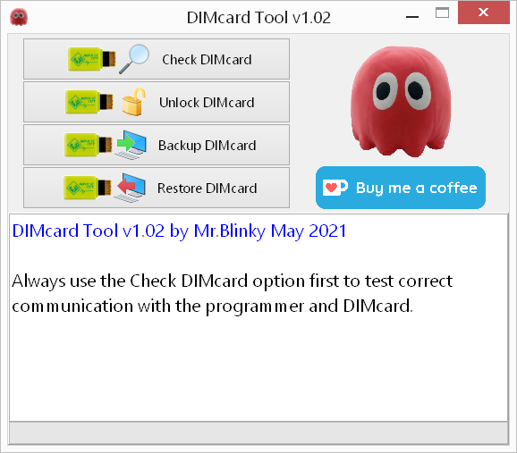
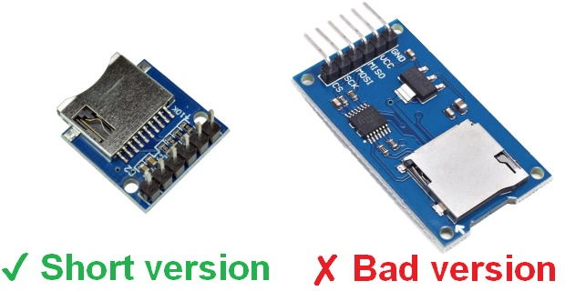
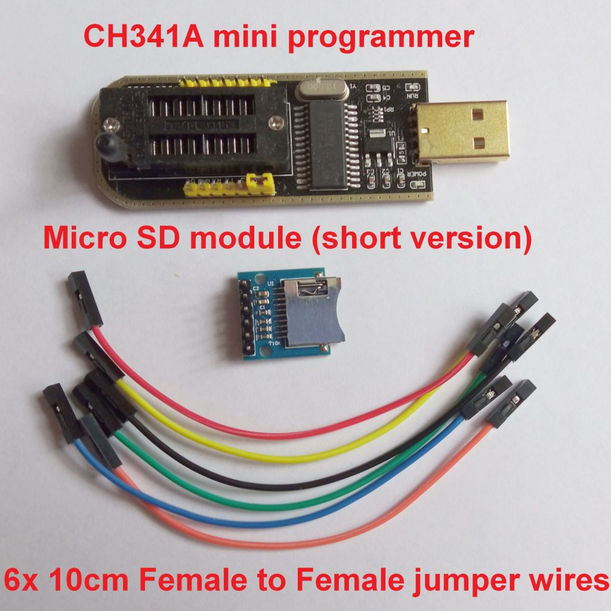
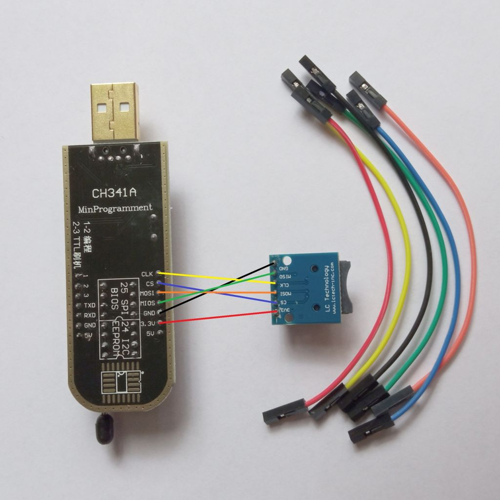
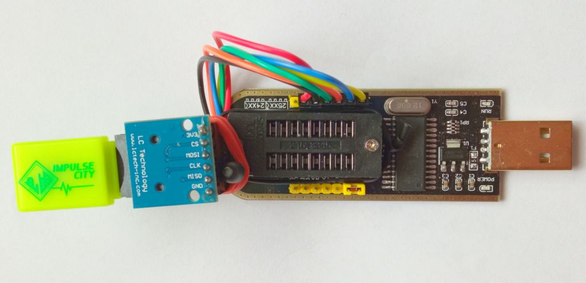

Digimon DIMcards contain little flashchips that can be (re)programmed. This tool was made for the purpose of customizing dimcards and requires a CH341A mini programmer to re-program DIMcards.
This tools programmer code is based on the AsProgrammer project by nofeletru https://github.com/nofeletru/UsbAsp-flash/
There is no installer so all you have to do is unpack the zip file to a location of your choice.
If this is the first time you use the CH341A mini programmer then the driver must be installed. The driver can be found in the driver folder.
To start the tool click the DimCardTool.exe. A window like below will appear.

The tool as 4 options:
Use this option to check the communication with the CH341A mini programmer and the DIMcard status. If the programmer is not found then check the USB connection and/or (re)install the driver. If the DIMcard is invalid then check it's inserted properly and check the wiring of the micro SD card module.
Once a DIMcard is used on a Vital Bracelet, the DIMcard is linked to that Vital Bracelet and it can not be used again another Vital Bracelet. Use this option to remove the Vital Bracelet link so the DIMcard will be usable on another Vital Bracelet.
Before you can customize a DIMcard, you will need to make a backup copy of the DIMcard. Use this option to save the original DIMcard contents to disk.
Note.
It is recommended to store a backup copy in a .zip file. So it
doesn't get accidentally patched later on when working on customizing it.
Use this option to load your customized file or your original copy onto the DIMcard. The process of erasing and re-programming the DIMcard chip will take several minutes.
For the hardware you need a CH341A mini programmer, a short micro SD card module with presoldered header pins and 6 pieces of 10cm long female to female jumper wires. These can be purchased from on-line shopping sites like Aliexpress, Ebay and Amazon.
The CH341A mini programmer is often sold with accessories. You do not need any of those. Only the base unit is required. It doesn't have to come with software either.
 there are many micro SD card modules available. Make sure you get a short version (the metal connector, not necessarily the circuit board) and that the pin header is soldered onto the module already (the pin header is the black bar with pins sticking out).
Note:

The Micro SD card module is connected to the programmer by connecting 6 female to female jumper wires. The wiring is pretty straight forward. I recommend to use the same color wires as used here for easy trouble shooting but you are free to choose your own colors.

to secure the micro SD card module to the programmer. You can use a cable binder, rubberband, or double sided tape or hot glue. I chose a non permanent method for now of using cable binder that came with a USB cable and a rubber band.
